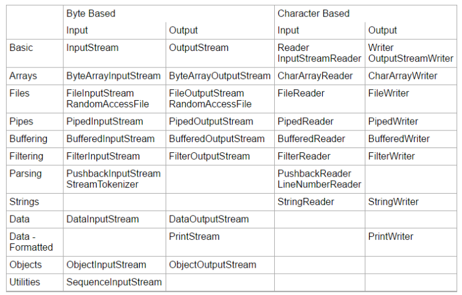

Java IO(1) Overview 发表于 2017-04-15 更新于 2020-12-20 分类于 Java IO Java IO 支持特性 文件访问网络访问内存访问线程之间的访问 (Pipes 管道)缓冲过滤解析读写文本 (Readers / Writers)读写原始数据类型 (long, int 等)读写对象 Java IO 类一览 From ：http://tutorials.jenkov.com/java-io/overview.html